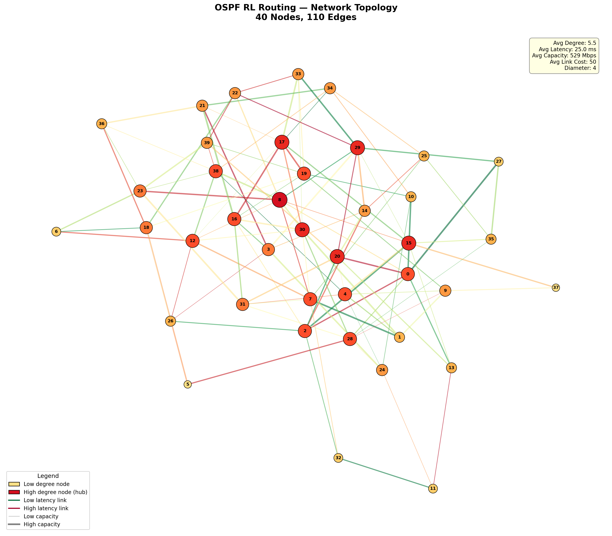

Projects & Case Studies

Built a 2-stage Clos fabric from scratch
This article documents my journey of building a network fabric using Arista switches in Containerlab, covering everything from research, planning to execution, testing and troubleshooting.

Logs Don't Lie
A hands-on cybersecurity lab documenting multi-stage breach simulation using Wazuh SIEM, Kali Linux, Hydra, and Netcat for threat detection.

The focus shouldn't just be on the oil. There are "deeper" problems
Exploring the vulnerability of undersea fiber-optic cables and using AI and reinforcement learning to improve network resilience.

CTF Try Out 2026 - writeup
Documenting boxes solved in the HackTheBox CTF event — a raw, think-aloud walkthrough of each challenge.

Reinforcement Learning–Driven Failure Resilience in OSPF Networks
Academic research report from Master's in Engineering Technology at SJSU.